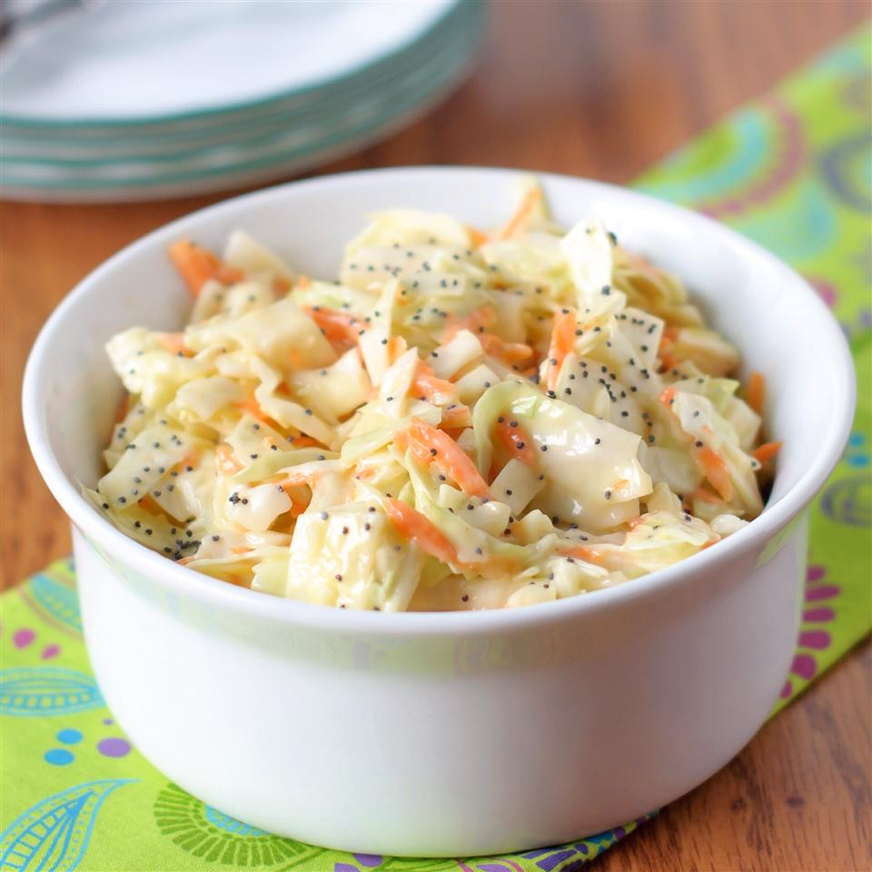

Coleslaw

Description
This tastes just like the cole slaw served at popular fried chicken or fish restaurants. It's excellent with burgers or on top of BBQ'd pork sandwiches, too!
Ingredients
- 1 (16 ounce) bag coleslaw mix
- 2 tablespoons diced onion
- 2/3 cup creamy salad dressing
- 3 tablespoons vegetable oil
- 1/2 cup white sugar
- 1 tablespoon white vinegar
- 1/4 teaspoon salt
- 1/2 teaspoon poppy seeds
Steps
- Combine the coleslaw mix and onion in a large bowl.
- Whisk together the salad dressing, vegetable oil, sugar, vinegar, salt, and poppy seeds in a medium bowl; blend thoroughly. Pour dressing mixture over coleslaw mix and toss to coat. Chill at least 2 hours before serving.